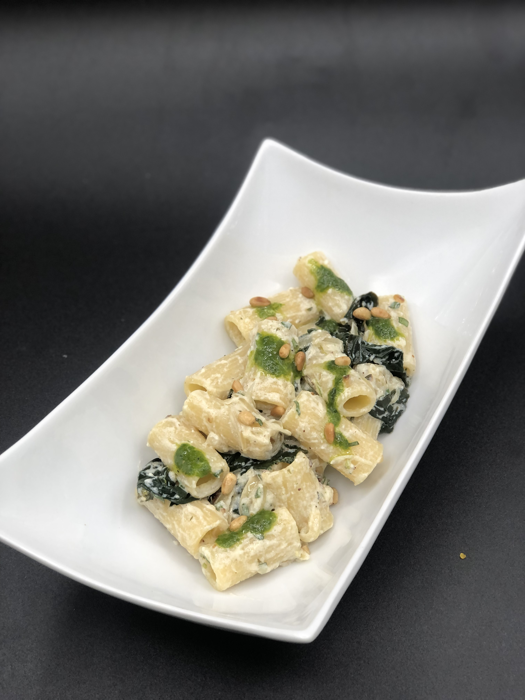
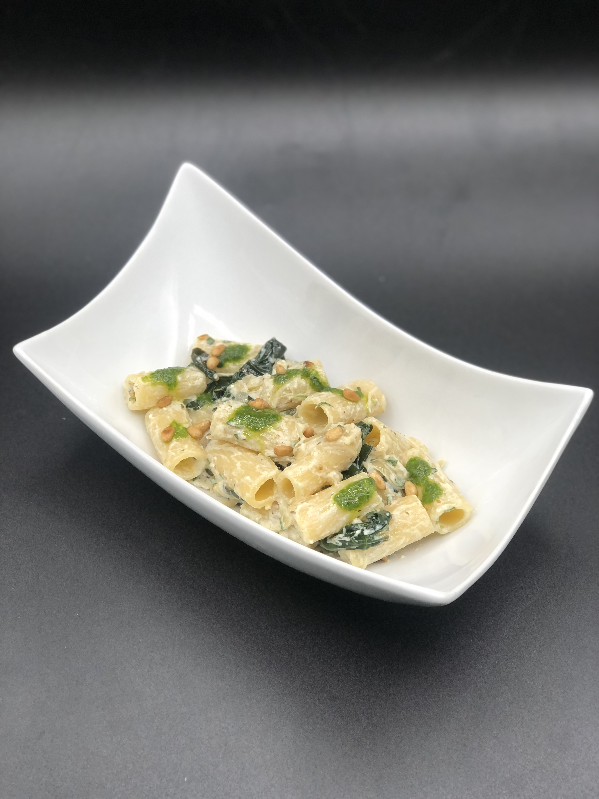

Rigatoni Ricotta, Pignon de pin / Pesto Ail des Ours

Préparation
Équeutez et lavez les épinards, émincez le demi-oignon et faites le suer dans une grande poêle avec un peu d'huile.
Une fois que vos oignons sont fondants, ajoutez une noisette de beurre et faite "tomber" vos épinards à feu bien vif, quand les épinards se sont bien ramolli, vous pouvez assaisonner avec du sel et du poivre. Éteignez le feu et laissez refroidir vos épinards.
Dans un bol, assaisonnez votre ricotta avec un trait d'huile d'olive, sel, poivre. Taillez votre basilic en petit carré et ajoutez les à votre ricotta. Dans une poêle faite griller à sec vos pignons de pin, émincez là un quart et ajoutez les à votre ricotta. Une fois que les épinards sont tombés en température ajoutez-les aussi à votre ricotta mélanger bien et remettez le tout dans votre poêle.
Lavez, équeutez et séchez l'ail des ours, mettez-les dans un bol à mixeur, ajoutez une bonne moitié de pignons de pin dedans ainsi que le parmesan râpé. Mixer tout en ajoutant un filet d'huile d'olive jusqu'à l'obtention d'une texture pesto.
Cuire vos pâtes dans une grosse casserole d'eau bouillante salée et un trait d'huile. Quand les pâtes sont cuites ajoutez les a votre mélange ricotta, rectifier l'assaisonnement si besoin.
Dans une assiette creuse déposer vos pâtes, avec une petite cuillère ajoutez un peu de pesto d'ail des ours par-dessus ainsi que les pignons de pin qu'il vous reste et le tour est joué.

Ingrédients
300gr de Rigatoni
1/2 Oignon
300gr d'épinards
4 feuilles de Basilic
20 feuilles d'ail des ours
60gr de Pignons de pin
150gr de Ricotta
40gr de Parmesan
Sel/Poivre
Huile d'olive

Retour